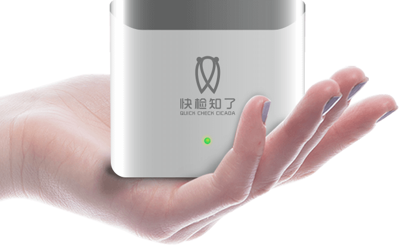

知康科技（北京）有限公司
地址：北京市海淀区信息路12号中关村发展大厦1层
备案信息：京ICP备15067541号-1
2018年7月10日，《未来健康主义发现节》暨知康500万用户发布会在北京中关村发展大厦隆重举办。本次发布会由知康和脉脉俱乐部联合主办。社会各界投资人、脉脉俱乐部、企业家及知康科技核心高管等150余人出席发布会。央视网、人民网、环球网等网络媒体，中国商报、中国企业报、健康时报等平面媒体以及爱奇艺、腾讯、优酷、搜狐等视频媒体均出席发布会并进行了报导。
知康科技（北京）有限公司组建于2016年10月，是一家国际领先的集研发、投资、技术服务为一体的高科技创新企业。以为“人民健康服务”为宗旨，致力让健康变简单。2016年进入市场后，知康以黑马之势迅速在业内打响知名度，一年的时间做到市场占有率第一、客户数量第一、人工智能分析第一、服务里程第一、更新迭代速度第一。
知康CEO白崇华现场分享了知康的企业核心使命价值。他介绍，知康开发了全球第一台互联网模式无创体检仪，第一个健康数据集成模块，已经集聚了28亿条数据，500万用户，实现了第一个人工智能的人体健康画像。
从2016年10月8日到2018年6月28日，不到两年的时间，知康完成了500万次无创检测服务，500万次APP下载，500万次数据采集，知康深耕单个保险领域，厚积薄发，知康用技术服务打造好了自己的护城河。
“这个领域的市规模很大，百万亿的蓝海，知康希望通过自己的努力，提供一个健康产业标准化入口，并且成为这个行业的独角兽企业。一个设备，一个行业，知康正在通过自身的技术优势和产业链整合优势为每个行业提供一个定制化的健康管理解决方案。”CEO白崇华接受媒体采访时表示。同时，在资本层面，白崇华透露，知康计划2020年启动IPO。
发布会同期重磅发布了健康产业布局和快检知了家用健康导航仪。快检知了家用导航仪的发布旨在让健康真正进入每家每户，让健康无处不在；健身事业部发布的健身产业解决方案旨在让健身行业的健康变简单。知康已经在保险行业已经取得了成功的探索，未来也将通过每个行业的开拓让360行的健康都变得更简单。
近年来，我国大健康产业也呈现蓬勃发展之势。从全民健康的普及，到《“健康中国2030”规划纲要》的提出，随着“健康中国”建设上升至优先发展的国家战略层面，大健康产业已经成为我国经济转型的新引擎。在市场蓝海和国家政策的双重驱动下，以知康科技为代表高科技企业也将顺势而为，结合科技发展颠覆传统健康产业发展。

知康科技（北京）有限公司
地址：北京市海淀区信息路12号中关村发展大厦1层
备案信息：京ICP备15067541号-1